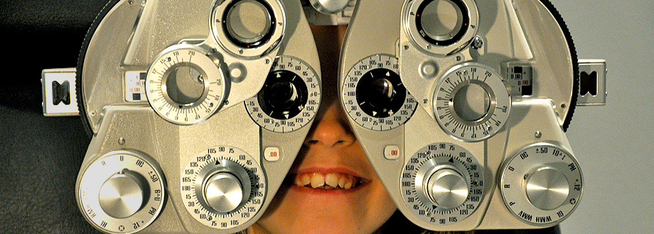
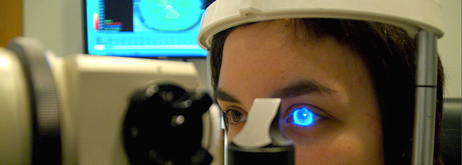
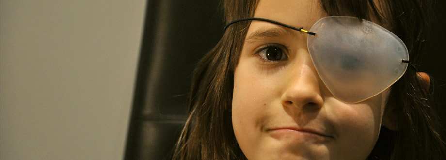

Dosòptics és la seva òptica de confiança a Sabadell. Treballem per la salut i la qualitat de vida dels nostres pacients amb tecnologies de diagnòstic i exploració molt avançades i la experiència de òptics optometristes. Tot plegat amb l'objectiu d'oferir-li una atenció de qualitat humana i professional.
Qui som

Hi ha quatre tipus de graduacions que es neutralitzen amb ulleres o lents de contacte:
Es aquella condició que ve donada per tenir un ull massa potent, diríem que l'ull té sempre el zoom posat i només pot enfocar a distancies curtes. La diòptria és l'invers de la màxima distància a que pot enfocar l'ull. (distància mesurada en metres) Amb 2 diòptries de miopia l'ull sols pot enfocar a mig metre (màxim de lluny a 50 cm). Estem associats a la campanya de detecció de DMAE-2010 (degeneració macular associada al edat), això vol dir que passem un test per avaluar la integritat macular.
És la condició contrària a la miopia, en aquest cas l'ull es poc potent i per veure-hi de lluny ha de fer servir el zoom (tècnicament s'anomena Acomodació), així algú hipermetrop pot enfocar de lluny però sempre amb un important desgast energètic. Les distàncies més complicades per treballar per als hipermetrops són les distàncies curtes: lectura, ordinador, manualitats...
Podem corregir-la amb ulleres o lents de contacte.
Stigma significa punt en grec. La A del davant indica la negació del punt. Qui té astigmatisme sol tenir l'ull o algun dels seus components una mica bombat enlloc de perfectament esfèric i així es com li resulta la imatge d'un punt: allargada. L'astigmatisme pot provocar mala visió tant de lluny com de prop y sobretot destorba per a estudiar o per a treballar amb ordinador.
Estem associats a la campanya de detecció de DMAE-2010 (degeneració macular associada al edat), això vol dir que passem un test per avaluar la integritat macular.
Dins els serveis que podem trobar a nivells de revisió ocular, podem destacar el control de la PIO (Pressió IntraOcular), test de la prevenció de la DMAE(degeneració macular associada a l'edat), la graduació de la visió, el control de lents de contacte; I d'una altra banda fem revisions més completes per casos de nens amb ulls ambliops (mandrosos), estrabismes i problemes d'aprenentatge.

Som especialistes en LCs per a casos especials :
LCs gas-permeables ("semirígides") indicades en post-traumatismes, en condicions especials com Queratoconus i per a usos sofisticats com LCs multifocals o per al control de la miopia (LCs de geometria Inversa o d'Orto-K).
I també LCs toves de durada: anual, trimestral, mensual o diària.

Tractem problemes d'aprenentatge: es tracta d'anar més enllà dels problemes de graduació i millorar-ne la atenció i concentració del nen, a base d'optimitzar les planificacions motores del sistema visual i millorar-ne la percepció.
Servei professional d'audiologia. Truqui'ns al telf <> per demanar una revisió gratuïta.
Dosòptics és la seva òptica de confiança a Sabadell. Treballem per la salut i la qualitat de vida dels nostres pacients amb tecnologies de diagnòstic i exploració molt avançades i la experiència de òptics optometristes professionals. Tot plegat amb l'objectiu d'oferir-li una atenció de qualitat humana i professional.